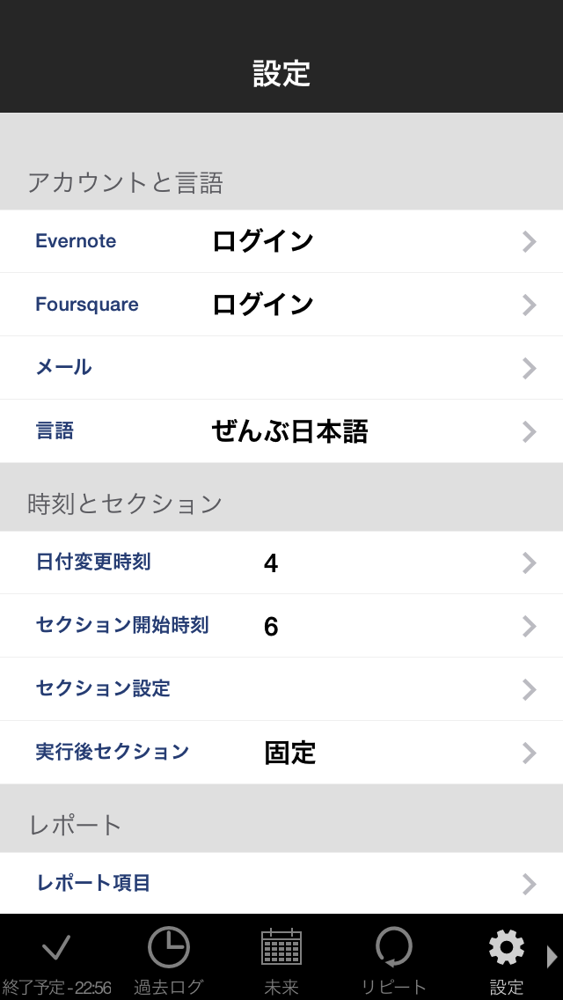

Settingタブ
設定画面

- Account & Language（アカウントと言語）
- Evernote：Evernoteアカウント認証
- Foursquare：Foursquareアカウント認証
- Mail：メールアドレス設定（レポート等送信先）
- Language：言語設定
- Time & Section（時刻とセクション）
- Date Line：Date Line設定（日付変更時刻）
- Date Start：Date Start設定（Section設定画面 開始時刻）
- Section Setting：セクション設定
- Section(ExecutedTasks)：実行後セクション設定
- Report（レポート）
- Report Item：レポート項目設定（レポート出力項目・順序設定）
- Encoding：文字コード設定（CSVファイル）
- Evernote Notebook：レポート保存ノートブック設定
- Send Report：作成済デイリーレポート送信
- UI（画面）
- Tab Setting：タブ順設定
- Time Edit Type：開始/終了時刻編集画面のUI設定(Picker/Key)
- Row Height：行高さ設定
- End Task View：タスク終了画面表示（タスク終了時のコメント・評価画面を表示する最小実績時間（分）を設定）
- Other（その他）
- Calendar Import：カレンダー取込設定（カレンダーからの取込On/Off、カレンダー選択）
- Calendar Export：カレンダー出力設定（デフォルトの出力先選択）
- Notification Sound：通知設定（起動中の通知音On/Off）
- Notification Frequency：通知頻度（開始予定時刻を設定したタスクの通知頻度、1分毎/1時間毎/1回のみ）
- Remake Notifications：通知の再作成（作成済みの通知を全て破棄し、未完了のタスクの分を再作成）
- Backup & Import（バックアップとインポート）
- Dropbox Backup：Dropboxを使用したバックアップ/インポート
- CSV Import Template：CSVインポート用のテンプレートファイル送信
- Info
- Help：マニュアル（本マニュアル）
- Feedback：お問い合わせ（taskuma.info@gmail.comへのメール送信）
- Version：インストールされているたすくまのバージョン
- License：ライセンス関連の記載
→Help Topへ →Taskuma Topへ